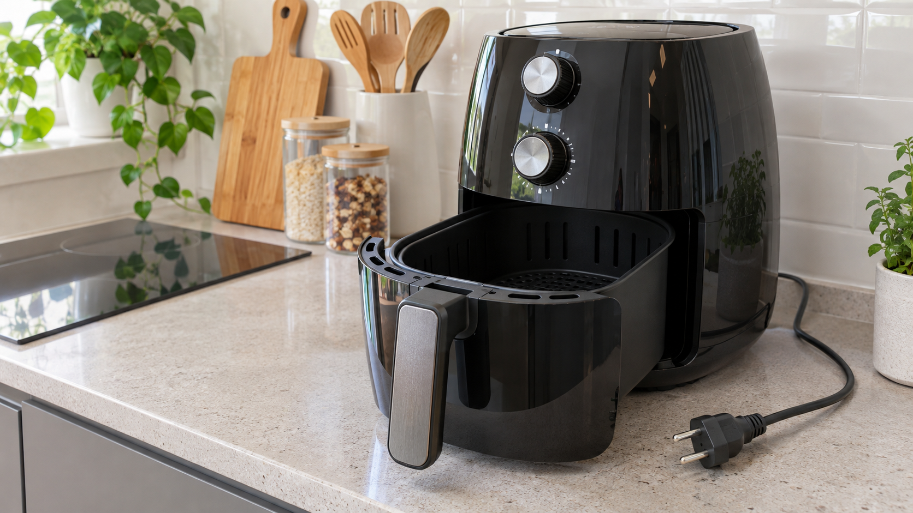

에어프라이어 팬 소리는 나지만 가열되지 않으면 바스켓 체결, 온도·시간 설정, 예열 상태를 먼저 확인하세요. 타는 냄새, 스파크, 차단기 작동이 있거나 열선이 손상돼 보이면 즉시 플러그를 뽑아야 합니다.
| 상태 | 판단 |
|---|---|
| 초기 몇 분 온도 상승이 느림 | 용량·설정에 따라 가능 |
| 팬만 돌고 계속 찬바람 | 열선·제어부 점검 필요 |
| 작동 중 반복 정지 | 바스켓 감지·과열 보호 확인 |
열선을 손으로 만지거나 내부를 분해하거나 통풍구를 막은 채 시험하지 마세요.
바스켓을 다시 끼워도 가열되지 않거나 오류·냄새·차단이 반복되면 모델명과 설정 화면을 기록해 점검받으세요. 에어프라이어 연기와 냄새 해결법도 참고하세요.
예열·바스켓 감지 방식은 모델별 사용설명서를 우선 확인하세요.